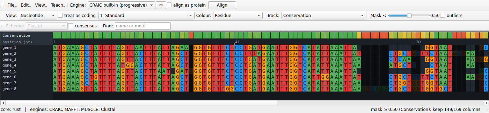

Interface reference
Every control in the CRAIC window, top to bottom. The window has three toolbar rows, the central alignment canvas, a dockable Ambiguity tools panel on the right (hidden by default — open it from the View menu), and a status bar.

Toolbar — File / Edit row
Document actions live under dropdown buttons at the left of the row — File ▾ (load, save, export, history), Edit ▾ (clipboard and alignment edits), View ▾ (show/hide panels), Teach ▾ (known-answer tools, see Teaching) and Help ▾ (the website, and who wrote CRAIC and how to cite it). Keyboard shortcuts work whether or not a menu is open; every action except Open… is disabled until an alignment is loaded.
| Control | What it does | Notes |
|---|---|---|
| File ▾ → Open… | Load sequences or an alignment. | Ctrl/⌘+O. Reads FASTA, PHYLIP, Clustal, Stockholm, NEXUS (by extension). Unaligned input is padded and you're prompted to Align. |
| File ▾ → Save… | Write the current alignment. | Ctrl/⌘+S. FASTA, Clustal, PHYLIP, Stockholm, NEXUS, MEGA. |
| File ▾ → Export image… | Save the whole alignment as a PNG (current zoom and level). | |
| File ▾ → Export masked… | Write the alignment with low-confidence columns removed. | Uses the current Track + Mask threshold (set on the View / Analyse row). FASTA output (the coding annotation is dropped). |
| File ▾ → Export figure… | Open a dialog to render a publication figure — the alignment, a confidence report, an uncertainty logo, homology arcs / co-occurrence (you pick the two sequences), a homology card, or an interactive HTML view — as PDF / SVG / PNG. | Choosing the sequences in the dialog is why paired figures no longer silently use the first two. |
| File ▾ → Compare with alignment… | Load a second alignment and overlay a per-column agreement track (red where the two place residues differently). | Compares by shared sequence names. |
| File ▾ → History… | Show the provenance log — what produced the current alignment, in order (open, alignments, realignments, edits). | Written as a *.craic-history.txt sidecar when you Save, so a hand-built multi-program alignment stays reproducible. |
| Edit ▾ → Copy ▸ | Copy the selection (or whole alignment) to the clipboard at the viewed level, in a format you pick from the submenu: FASTA, Clustal, PHYLIP (interleaved / relaxed / sequential), Stockholm, NEXUS, MEGA. | Ctrl/⌘+C copies FASTA directly. Same format set as Save; copies the displayed residues (bases, codons, or amino acids). |
| Edit ▾ → Select all | Select every column of the alignment. | Ctrl/⌘+A. Feeds the selection to Copy and to the ambiguity panels. |
| Edit ▾ → Sort by similarity | Reorder sequences so similar ones sit together (k-mer nearest-neighbour chain). | |
| Edit ▾ → Remove gap columns | Drop columns that are gaps in every sequence (whole gap-only codons when coding). | |
| Edit ▾ → Go to next ambiguous region | Jump the selection to the next low-reliability hotspot. | Ctrl/⌘+G. Computes reliability on demand the first time. |
| Edit ▾ → Edit alignment ▸ | Undo/Redo plus structural edits: nudge a residue, insert a gap column, delete an empty column, pin and unpin trusted columns, realign around the pinned ones. | The everyday way to edit is the keyboard (see Keyboard & mouse); these are the menu equivalents, all undoable and logged. |
| Edit ▾ → Sequence groups ▸ | Save the selected sequences as a named set (e.g. "animals"), then re-select them in one click to slide them together. | Stored in the <file>.craic.json sidecar. |
| Edit ▾ → Annotations ▸ | Add a named, coloured column feature (helix, active site, …) from the selection; select one to highlight its columns; export only the annotated columns. | Shown in a band at the bottom; stored in the sidecar. |
| View ▾ → Ambiguity tools panel | Show or hide the Ambiguity tools dock (sandbox, posterior explorer, column inspector). | Hidden by default — use this to show it, and to bring it back if you've closed it with its ×. |
| View ▾ → Bigger / Smaller / Reset text size | Zoom the residue font and cells. | Ctrl/⌘ + / - / 0, or Ctrl/⌘ + scroll over the alignment. |
| Help ▾ → CRAIC website | Open https://mol-evol.github.io/craic/ in your browser. | |
| Help ▾ → About CRAIC and how to cite it… | Version, author (with a link to https://mol-evol.github.io/), the website, and the citation. | Copy citation puts the citation on the clipboard. See About & citation. |
| Engine | The aligner used by Align. | Always lists CRAIC built-in (progressive); adds MAFFT, MUSCLE, Clustal Omega, PRANK if found on PATH. See Engines. |
| ⚙ (parameters) | Edit the selected engine's parameters — gap costs, MAFFT strategy/--op/--ep, Clustal Omega iterations, PRANK gap rates. |
Opens a small dialog with Restore Defaults. Settings are remembered per engine for the session and are used by both Align and the Aligner agreement track. Engines with no tunable knobs (e.g. MUSCLE v5) say so. |
| align as protein | Translate the coding nucleotides, align the amino acids, then thread the original nucleotides back through that alignment. | Only effective for nucleotide data. Assumes reading frame 0. The nucleotides stay in memory and the result carries a coding annotation, so the nt / codon / amino-acid views all work; the view switches to amino acid automatically when alignment finishes. |
| Align | Re-align the current sequences with the chosen engine. | Runs in the background with a progress dialog you can Cancel (handy because the built-in aligner is pure-Python and slow on large alignments — use MAFFT for those). Operates on the ungapped sequences. |
Toolbar — View / Analyse row
| Control | What it does | Notes |
|---|---|---|
| View | Switch the display level: Nucleotide, Codon, Amino acid. | Only levels valid for the data are listed (codon/aa need a coding nucleotide alignment, or protein data). |
| treat as coding | Mark a plain nucleotide alignment as coding (reading frame 0) so the codon/aa views become available. | Disabled for protein data. Warns if the result contains internal stop codons. |
| genetic code | The NCBI translation table used by the codon and amino-acid views and by align as protein. | Defaults to 1 (Standard). Mitochondrial and Mollicute sequences do not use it: vertebrate mitochondria are table 2, Mycoplasma and Spiroplasma table 4. Getting this wrong turns real tryptophans into stop codons, and a stop carries no homology signal, so it degrades the alignment as well as the display. Changing it re-reads the alignment immediately. |
| Colour | Residue, Confidence, or Correct placement. Residue colours follow the level: bases (nt), the encoded amino acid (codon), or the residue (aa). | Choosing Confidence runs the reliability analysis automatically if needed. Correct placement colours each residue by whether it sits with the partners a known-true alignment gives it, and needs a reference — it is offered only when one is loaded, and it survives an edit so the colours move as you work. |
| Track | Per-column overlay: (none), Conservation, Reliability, Consistency, Perturbation, Aligner agreement, and the model-free trimmers Gap fraction (MSA_trimmer), Similarity (trimAl), trimAl gappyout, trimAl strict, Gblocks. | Choosing a track computes whatever it needs on demand and shows it — Conservation and the trimmers are instant; Reliability / Consistency / Perturbation run the reliability analysis once, then cache; Aligner agreement re-aligns with every installed engine at its current ⚙ settings and overlays how often they reproduce the current alignment's columns (it does not replace the alignment). Gap fraction and Similarity are score bands the Mask < slider trims; gappyout / strict / Gblocks choose their own columns automatically (the slider yields to their decision). The mask and Confidence colouring use the active track. |
| Mask < | Threshold slider (0.00–1.00, default 0.50). | Columns whose current-track score is below the threshold dim out as a live preview; the status bar shows how many survive. Columns with no score are kept. Write the result with File ▾ → Export masked…. |
| outliers | Flag whole sequences that align poorly with the rest (EvalMSA / OD-seq-style: robust-MAD threshold on each sequence's mean pairwise column similarity). | Flagged sequences get a red marker in the name column. Independent of the level and the column mask; recomputed when ticked. |
Toolbar — Display row
| Control | What it does | Notes |
|---|---|---|
| Scheme | Amino-acid colour scheme: Clustal, Zappo, Taylor, Hydrophobicity. | Applies to amino-acid and codon views; nucleotides always colour by base. |
| consensus | Show a consensus row beneath the alignment (commonest residue per column, at the current level). | |
| Find | Jump to and highlight a sequence by name, or a residue/codon motif. | Type and press Return. |
The alignment canvas
The canvas is virtualised — only on-screen cells are drawn — so it stays fast on large alignments. Around the grid:
- Name gutter (left) — sequence IDs, fixed while you scroll horizontally.
- Ruler — column positions, ticking at a spacing that adapts to zoom.
- Track band (top) — the per-column score selected in Track, on a red → amber → green ramp (grey = undefined).
- Cells — coloured by residue or by confidence; gaps are dark. A codon cell spans three nucleotide columns; an amino-acid cell shows the translated residue.
Overlays:
- Mask preview — columns below the threshold are dimmed.
- Selection — a click-drag column range, highlighted in blue; this drives both ambiguity panels.
- Probe — a single-clicked residue is outlined in white, and the columns it could align to are washed in purple (brighter = higher posterior). On large alignments the probe averages over a representative sample of the other sequences so it stays responsive.
Interactions:
| Action | Result |
|---|---|
| Scroll | Pan vertically (scrollbars pan both axes). |
| Ctrl/⌘ + scroll | Zoom the cell size. |
| Click-drag | Select a column range (feeds the sandbox and posterior explorer). Drag past the left or right edge and the view auto-scrolls so you can extend the selection beyond what's on screen. |
| Ctrl/⌘+A | Select the whole alignment (same as Edit ▾ → Select all). |
| Single-click a residue | Probe it — show its homology cloud. |
Ambiguity tools dock
A tabbed panel docked on the right, hidden by default — open it from View → Ambiguity tools panel (drag its title bar to move or float it). The sandbox and the posterior explorer follow the level you're viewing: in codon or amino-acid view of a coding alignment, the sandbox aligns alternatives codon-aware and previews amino acids, and the posterior explorer works in amino-acid space — so you never compare a nucleotide re-alignment while reading amino acids.
Realignment sandbox
| Control | What it does |
|---|---|
| Region header | Shows the selected column range. |
| Generate alternatives | Re-aligns only the selected block under several engines and gap-cost settings (background task). A progress dialog shows which engine is running and lets you Cancel; cancelling stops after the engine currently in flight finishes. |
| Alternatives list | Each candidate with its width and sum-of-pairs identity, best first. |
| Preview | The chosen candidate as plain text. |
| Apply selected → splice into alignment | Replaces the selected columns with the chosen block; the rest of the alignment is untouched. |
Posterior explorer
| Control | What it does |
|---|---|
| seq / vs | The two sequences to compare (the second is disabled in Profile mode). |
| mode | Posterior (raw pair-HMM matrix), Residual (minus current) (committed alignment subtracted), Profile (i vs rest) (one sequence vs the whole alignment). |
| colour | Heatmap colormap: Viridis (default), Magma, Inferno, Turbo, Cividis, Cyan, or Greyscale. |
| Info line | Region, matrix size, and a headline statistic for the current mode. |
| Heatmap | The matrix on the chosen colormap, with a 0 → 1 colorbar legend below it; residue labels appear on the axes when zoomed in. |
The posterior explorer is for local regions: if the selection is wider than 200 columns (e.g. after Select all) it asks you to narrow it rather than building an unreadable, slow matrix.
Column inspector
Needs a reference (see Teaching with a known answer); without one it says so.
| Element | What it does |
|---|---|
| Header | The clicked column, whether it matches the reference, and which reference column it corresponds to. |
| Correctly grouped here | The residues the reference puts together and the alignment got into place. |
| Does not belong here | Residues placed in this column that belong elsewhere, with how far and in which direction they would have to move. |
| Belongs here but is elsewhere | Residues the reference puts in this column that the alignment put somewhere else, and where they currently are. |
| Column links | Every column named is a link — click it to jump there. |
The panel follows the edit cursor, so the arrow keys walk along the alignment reading the answer column by column, and it updates after every edit. Residues are named id X<n>, where n is the position in that sequence; column numbers refer to the alignment.
A column can score a perfect 1.0 on the correctness track and still be reported here as incomplete: the score asks whether the homologies a column asserts are true, and a column that left a residue out asserts nothing false.
Status bar
- Left: the compute backend (
core: rustorcore: numpy) and the engines CRAIC found. - Right: context — alignment size, the current selection, the mask keep-count, or a probe hint. Transient progress messages ("Aligning…", "Probing residue…") appear here while background tasks run.